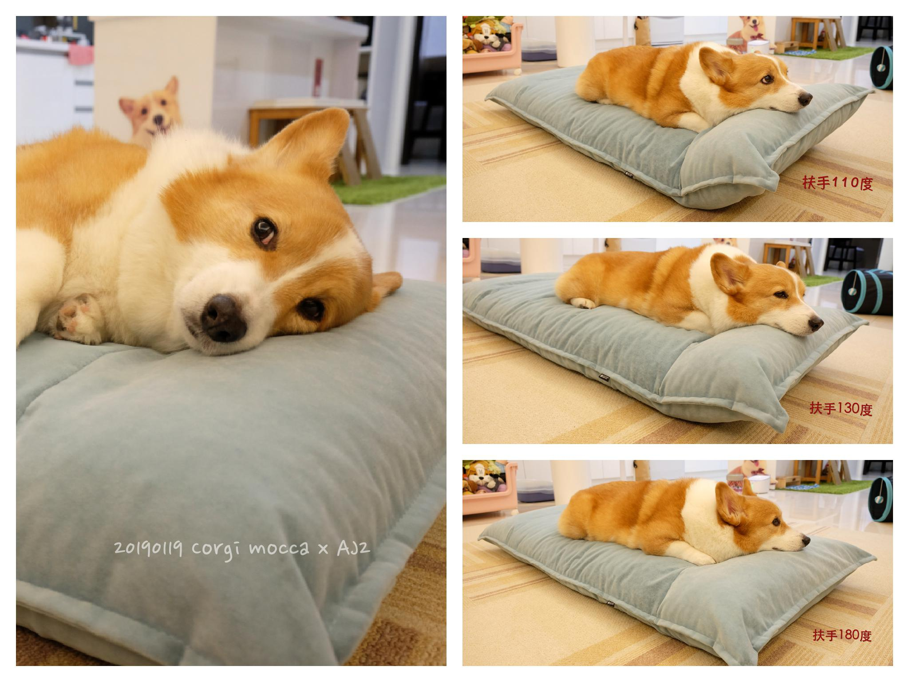

<!DOCTYPE html>
<html lang="zh-TW">
<head>
    <meta charset="UTF-8">
    <meta name="viewport" content="width=device-width, initial-scale=1.0">
    <title>【試用】北歐風 nappie 汪汪太空船</title>
    <style>
        body { font-family: -apple-system, BlinkMacSystemFont, "Segoe UI", Roboto, sans-serif; max-width: 800px; margin: 0 auto; padding: 20px; line-height: 1.6; }
        h1 { color: #333; }
        .date { color: #666; margin-bottom: 20px; }
        img { max-width: 100%; height: auto; }
        a { color: #0066cc; }
        .back { margin-top: 40px; padding-top: 20px; border-top: 1px solid #eee; }
    </style>
</head>
<body>
    <h1>【試用】北歐風 nappie 汪汪太空船</h1>
    <p class="date">2019-01-23</p>
    <div class="content">
        <p>&nbsp;</p>
<p><span style="font-size: 16px; caret-color: #000000; font-family: arial, sans-serif;">本文為廠商提供產品的</span><span style="font-size: 16px; caret-color: #000000; font-family: arial, sans-serif;">試用</span><span style="font-size: 16px; caret-color: #000000; font-family: arial, sans-serif;">文，除產品</span><span style="font-size: 16px; caret-color: #000000; font-family: arial, sans-serif;">試用</span><span style="font-size: 16px; caret-color: #000000; font-family: arial, sans-serif;">外，<span style="color: #ff0000;">無</span></span><span style="font-size: 16px; caret-color: #000000; font-family: arial, sans-serif;"><span style="color: #ff0000;">稿費</span></span></p>
<p>＝＝＝＝＝＝＝＝＝＝＝＝＝＝＝＝＝＝＝＝＝＝＝＝＝＝＝＝＝＝＝＝</p>
<p>&nbsp;</p>
<p><span style="font-size: 12pt; color: #000000;">卡卡的床不同款式的有好幾個，其中冬天會使用的一款甜甜圈床</span></p>
<p><span style="font-size: 12pt; color: #000000;">材質關係踩上去會因空氣擠壓，所以小狗需要費點力才能平衡踩穩</span></p>
<p><span style="font-size: 12pt; color: #000000;">年輕時使用覺得還好，這兩年觀察下來</span></p>
<p><span style="font-size: 12pt; color: #000000;">深怕卡卡起床時「小基腿」沒熱身一個不小心扭到</span></p>
<p><span style="font-size: 12pt; color: #000000;">所以今年本來就打算幫他換張床的，這艘太空船來得真是時候XD</span></p>
<p>&nbsp;&nbsp;</p>
<p><span style="font-size: 12pt; color: #000000;">nappie汪汪太空船特點：</span></p>
<p><span style="color: #333399;"><span style="font-size: 12pt;">1.『中鋼鐵管』為主要結構，</span><span style="font-size: 12pt;">骨架穩固且耐用，</span></span></p>
<p><span style="color: #333399;"><span style="font-size: 12pt;">&nbsp; &nbsp; 內材為多層人類沙發所使用的高密度海綿組成，不易塌陷、變形。</span></span></p>
<p><span style="color: #333399;"><span style="font-size: 12pt;">2.&nbsp;美國進口Microfibres布料</span><span style="font-size: 12pt;">可達到</span></span></p>
<p><span style="color: #333399;"><span style="font-size: 12pt;">&nbsp; 『不易沾毛、高抗污、高耐磨（防抓）、防潑水』等多項機能</span></span></p>
<p><span style="color: #333399;"><span style="font-size: 12pt;">3.&nbsp;nappie</span><span style="font-size: 12pt;">特別設計長型的拉鏈開口，就像床包一樣容易換洗。</span></span></p>
<p><span style="color: #333399;"><span style="font-size: 12pt;">4.&nbsp;獨家專利技術 扶手三段式調整</span><span style="font-size: 12pt;">（110度／130度／180度）</span></span></p>
<p><span style="color: #333399;"><span style="font-size: 12pt;">5.&nbsp;主打外型設計，</span><span style="font-size: 12pt;">從北歐美感基調出<span style="font-family: karla, -apple-system, system-ui, 'segoe ui', 微軟正黑體, 'microsoft jhenghei', sans-serif;">發</span></span></span></p>
<p><span style="color: #333399;"><span style="font-size: 12pt;">&nbsp; &nbsp; 嚴選『石墨灰』、『碧空蔚藍』為主色調</span></span></p>
<p><iframe src="https://www.youtube.com/embed/la6KSIC0fvU" width="560" height="315" frameborder="0" allow="accelerometer; autoplay; encrypted-media; gyroscope; picture-in-picture" allowfullscreen=""></iframe></p>
<p><!-- more --></p>
<p><span style="font-size: 16px;">第一眼看到nappie汪汪太空船外型就知道是我的菜，設計簡單、色調優雅</span></p>
<p><span style="font-size: 16px;">我幫卡卡選的<span style="font-size: 16px;">『碧空蔚藍』</span><span style="font-size: 16px;">顏色很美，實體更是很有質感</span></span>&nbsp;</p>
<p><span style="font-size: 16px;">床有兩個尺寸可選擇，</span><span style="font-size: 16px;">官網建議柯基可以使用M</span></p>
<p><span style="font-size: 16px;">但我幫卡卡選了L號，這樣兩邊扶手就算折起也足夠長度可以讓他平躺</span>&nbsp;</p>
<p></p>
<p><span style="font-size: 16px;">兩側全部攤平俯拍，哈哈 卡卡看起來好小一隻</span></p>
<p></p>
<p><span style="font-size: 16px;">攤平的高度大約16cm，上下對小短腿來說不算太負擔</span></p>
<p><span style="font-size: 16px;">卡卡一天到晚咬著玩具上去玩弄（撕殺）一番 (這什麼小賊表情你XD）</span></p>
<p></p>
<p><span style="font-size: 12pt;">扶手可三段式調整，</span><span style="font-size: 12pt;">對「饋逃王」卡卡來說這設計太貼心了&nbsp;</span></p>
<p><span style="font-size: 12pt;">休息的時候我通常兩邊會調整兩邊不一樣的高度讓他選&nbsp;</span><span style="font-size: 12pt;"><br /></span></p>
<p><span style="font-size: 12pt;">但我自己觀察卡卡喜歡130度的角度<span style="font-size: 16px;">饋逃</span>，我自己喜歡110度(?)</span></p>
<p>&nbsp;</p>
<p><span style="font-size: 12pt;"><span style="font-size: 16px;">扶手高度調整其實很輕鬆不費力</span></span></p>
<p><span style="font-size: 12pt;"><span style="font-size: 16px;">但<span style="font-size: 16px;">因為內部海綿很紮實，</span>如果要調回攤平狀態就需要稍微用點力氣凹折它</span></span></p>
<p><span style="font-size: 12pt;"> &nbsp;</span></p>
<p><span style="font-size: 16px;">Microfibres布料，對有養狗的人應該都不陌生</span></p>
<p><span style="font-size: 16px;">它是真的真的非常好清理，不沾毛、又防潑水，加上防抓這點更是貓奴的福音</span></p>
<p></p>
<p><span style="font-size: 16px;">底部這塊防滑我也覺得很厲害，</span><span style="font-size: 16px;">我常常在地上拖拉這床，也完全不沾毛</span></p>
<p><span style="font-size: 16px;">縫線處理也都很細緻不馬虎</span></p>
<p></p>
<p><span style="font-size: 16px;">拉鏈非常滑順，而且nappie特別設計長型的拉鏈開口，就像床包一樣容易換洗</span></p>
<p></p>
<p><span style="font-size: 16px;">實際拍攝拉鏈真的很滑順完全不卡卡，老木我<span style="font-size: 16px;">一個人拆洗也完全沒問題</span></span></p>
<p><span style="font-size: 16px;"><span style="font-size: 16px;">我家這張我洗過一次，<span style="font-size: 16px;">Microfibres布面果然很厲害，</span>洗完又像新的一樣</span></span></p>
<p><span style="font-size: 16px;"><span style="font-size: 16px;">一點口水痕跡都沒～～～</span></span></p>
<p><iframe src="https://www.youtube.com/embed/ZeOa3KckpME" width="560" height="315" frameborder="0" style="background-image: url('../../img/iframe.gif');" allow="accelerometer; autoplay; encrypted-media; gyroscope; picture-in-picture" allowfullscreen=""></iframe></p>
<p><span style="font-size: 16px;">布套內側有四個固定綁繩設計防止滑動</span></p>
<p><span style="font-size: 16px;">不過它裡面的<span style="font-size: 16px;">綁繩應該是利用剩餘的耗材(?) 我覺得這點很好也算環保</span></span></p>
<p><span style="font-size: 16px;"><span style="font-size: 16px;">但我必須說我那四條繩子真的超多鬚<span style="font-size: 16px;">鬚的，活脫脫就是四根玉米鬚rrrrrrr</span></span></span></p>
<p><span style="font-size: 16px;"><span style="font-size: 16px;"><span style="font-size: 16px;">所以我才會覺得是耗材，而且完全修剪不完那種鬚鬚（就是會一直脫線的意思）</span></span></span></p>
<p><span style="font-size: 16px;"><span style="font-size: 16px;"><span style="font-size: 16px;">有點可惜～畢竟整體外觀細節都不錯，結果打開因為「四根玉米」被小扣分XDDD</span></span></span></p>
<p>&nbsp;</p>
<p><span style="font-size: 16px;"><span style="font-size: 16px;"><span style="font-size: 16px;"><span style="font-size: 16px;">我拍的這條是唯一算乾淨的，所以也有可能你們的不會有玉米鬚(?)</span></span></span></span></p>
<p></p>
<p><span style="font-size: 16px;">人用沙發等級的高密度海綿真的躺起來很舒服，</span></p>
<p><span style="font-size: 16px;">卡卡真的很常願意自己上去休息 &nbsp;</span></p>
<p></p>
<p><span style="font-size: 12pt;">卡卡不愛上沙發躺，只好媽媽一起坐太空船（床）黏著卡比鼻 &nbsp;</span></p>
<p></p>
<p><span style="font-size: 12pt;">休息時間一起餵食我的雙卡寶寶們</span></p>
<p><span style="font-size: 12pt;">我自己真的很常偷用這床，因為真的很舒服嘛XD</span>&nbsp;</p>
<p></p>
<p><span style="font-size: 16px;">大頭寶寶的怪癖，最愛饋在扶手邊玩小夥伴</span>&nbsp;</p>
<p></p>
<p><span style="font-size: 16px;">小栗子也喜歡，其實她平常根本搶不到床 哈哈</span></p>
<p><span style="font-size: 16px;">比起躺著休息她更常是在坐在上面理毛</span></p>
<p></p>
<p><span style="font-size: 16px;">然後上去沒多久就被葛哥擠走 XD</span></p>
<p></p>
<p>&nbsp;</p>
<p><span style="font-size: 16px;">這床真的是我用過的床當中最喜歡的一張了 &nbsp;</span></p>
<p><span style="font-size: 16px;">厚實柔軟又有支撐力，</span><span style="font-size: 16px;">卡卡上去站穩不費力，也不擔心布面被卡栗抓花</span></p>
<p><span style="font-size: 16px;">使用了一個月的觀察，卡卡真的很常上去休息光是這點這床就值了 &nbsp;</span></p>
<p><span style="font-size: 16px;">東西不管是貴還是便宜，孩子肯用才是重點啊!!!</span></p>
<p></p>
<p>&nbsp;</p>
<p>&nbsp;</p>
<p><span style="font-size: 12pt;"> &nbsp;nappie汪汪太空船&nbsp;</span><span style="font-size: 12pt;"><span style="color: #1d2129; font-family: system-ui, -apple-system, system-ui, '.SFNSText-Regular', sans-serif; font-size: 15px;">嘖嘖</span>搶購傳送門&nbsp;<strong><a title="https://goo.gl/FnGV86" href="https://goo.gl/FnGV86" target="_blank">https://goo.gl/FnGV86</a></strong></span></p>
<p><span style="font-size: 12pt;">現在購買真的超級優惠，喜歡的捧油千萬要把握這限量早鳥價格</span></p>
<p>&nbsp;</p>
<p> &nbsp;<span style="font-size: 12pt;">募資期間 購買「任一件」nappie汪汪太空船(M或L) 於募資專案達標後</span></p>
<p><span style="font-size: 12pt;">AJ2將捐贈產品金額的＄50 給台灣動物保護協進會與台灣動物不再流浪協會&nbsp;</span></p>
<p>&nbsp;</p>
<p><span style="font-size: 12pt;"><span style="font-size: 16px;"> &nbsp;AJ2愛家概念粉專&nbsp;</span></span></p>
<p><span style="font-size: 12pt;"><a title="https://www.facebook.com/www.aj2.com.tw/" href="https://www.facebook.com/www.aj2.com.tw/" target="_blank">https://www.facebook.com/www.aj2.com.tw/</a></span></p>
<p>&nbsp;</p>
    </div>
    <div class="back"><a href="index.html">← 返回文章列表</a></div>
</body>
</html>